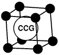

CCG Logo Competition Dec 98
Chemical Crystallography Group - Logo Competition
It has been suggested that a logo for the Chemical Crystallography Group
(CCG) would be helpful, for example in attracting the attention of readers
browsing through the pages of 'Crystallography News', and we are
inviting designs for it by running a small competition. The prize will be a
book token for £25 (twenty-five GB pounds). Entrants should note the
following information and conditions:
- Logo designs must be presented either on paper as very high quality
black-on-white drawings or as graphics files containing black-on-white
images: the preferred file format is Encapsulated Postscript (EPS) but the
following common file types may also be acceptable - GIF, JPG, JIF, JPEG,
PSP, PSD, TIF, TIFF, EMF, WMF and BMP. Entrants may submit one or more
entries. Entrants do not require to be members of the Chemical
Crystallography Group or of the BCA.
- The author of the winning entry must assign the copyright of his or her
design to the Chemical Crystallography Group of the British Crystallographic
Association. The CCG reserves the right to modify the winning entry for use
in different media.
- The design should attempt to express visually the distinct identity of
chemical crystallography and/or the CCG but no restrictions are placed on
how this is achieved. The design must be clear and attractive when reduced
to the typical size used on CCG material (e.g. 30 mm x 30 mm). The design
may or may not incorporate in whole or part the BCA logo but entrants should
bear in mind that these are likely to be used in conjunction.
- Entries should be sent to the Secretary of the CCG, Dr A.J. Blake,
School of Chemistry, University of Nottingham, University Park, Nottingham
NG7 2RD,
email A.J.Blake@Nottingham.ac.uk). Faxed entries will not be accepted.
The deadline for receipt of entries is 28 February 1999.
- Entries will be judged by a panel drawn from the CCG Committee. Should
an entry be received from an Officer or Member of the Committee, or from a
co-worker in their research group, that Officer or Member of the Committee
shall not serve on the judging panel.
Editor's Note: 
here is my idea to start you designing.
You may find further inspiration by looking at the logos submitted
for IUCr99, printed in 'Crystallography News' issue 57 June 1996 pages 10
and 11
Page last updated 10 Jan 1999
BCA Home page WebMaster
BCA@ISISE.RL.AC.UK
 Click here to return to BCA homepage
Click here to return to BCA homepage